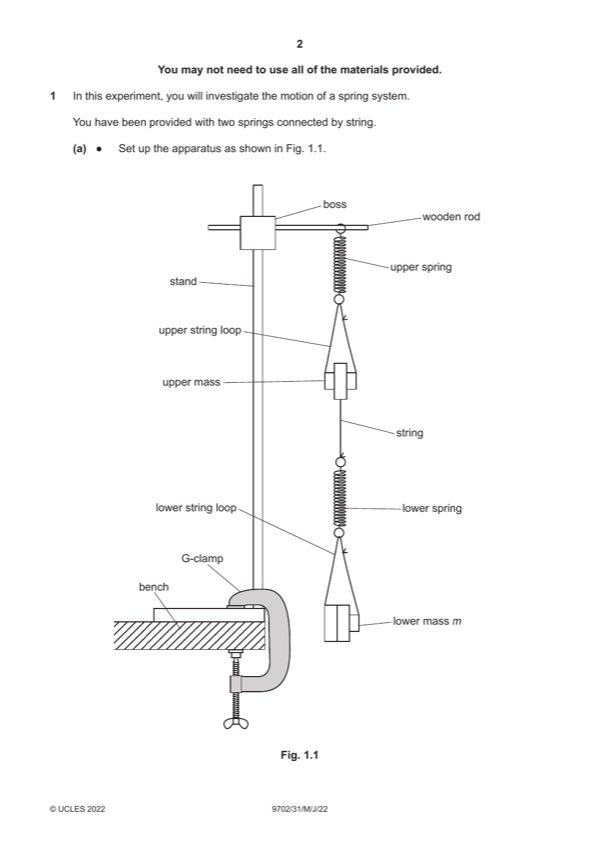

Question 1

Original paper page 2
Part 1(a) — solution
Value of T with unit and in the range 0.850–1.300 s. 1
nT measured at least twice with n ⩾ 5. 1
Mark points
- Include the ideas shown in the solution above.
Part 1(b) — solution
Total mass (upper mass + m) is 450 g with consistent unit. 1
Mark points
- Include the ideas shown in the solution above.
Part 1(c) — solution
Six sets of readings of m and time with correct trend (T increases as m increases) and without help from the Supervisor 4
scores 4 marks, five sets scores 3 marks etc.
Range: mmax – mmin ⩾ 300 g. 1
Column headings: 1
Each column heading must contain a quantity and a unit where appropriate.
The presentation of quantity and unit must conform to accepted scientific convention e.g. m / g, T / s, T / s½.
Consistency: 1
Raw values of time either all given to the nearest 0.1 s or all given to the nearest 0.01 s.
Significant figures: 1
All values of T must be given to the same number of s.f. as (or one more than) the number of s.f. in raw times.
Calculation: Correct calculation of T. 1
2022 Page 6 of 10
9702/31 Cambridge International AS & A Level – Mark Scheme May/June 2022
Mark points
- Include the ideas shown in the solution above.
Part 1(d)(i) — solution
Axes: 1
Sensible scales must be used, no awkward scales (e.g. 3:10 or fractions).
Scales must be chosen so that the plotted points occupy at least half the graph grid in both the x and y directions.
Axes must be labelled with the quantity that is being plotted.
Scale markings are no more than 2 cm (one large square) apart.
Plotting of points: 1
All observations in the table must be plotted on the grid.
Diameter of plotted points must be ⩽ half a small square.
Points must be plotted to an accuracy of half a small square in both x and y directions.
Quality: 1
All points in the table must be plotted (at least 5) on the grid for this mark to be awarded.
Trend of points must be positive.
It must be possible to draw a straight line that is within 25 g ( 0.025 kg) on the m axis of all plotted points.
Mark points
- Include the ideas shown in the solution above.
Part 1(d)(ii) — solution
Line of best fit: 1
Judge by the balance of all points on the grid about the candidate’s line (at least 5 points). There must be an even
distribution of points either side of the line along the full length.
Allow one anomalous point only if clearly indicated (i.e. circled or labelled) by the candidate. There must be at least 5
points left after the anomalous point is disregarded.
Lines must not be kinked or thicker than half a small square.
Mark points
- Include the ideas shown in the solution above.
Part 1(d)(iii) — solution
- Correct read-off from a point on the line and substituted into y = mx + c or an equivalent expression
- Intercept read directly from the graph, with read-off at m = 0, accurate to half a small square
Mark points
- Correct read-off from a point on the line and substituted into y = mx + c or an equivalent expression
- Intercept read directly from the graph, with read-off at m = 0, accurate to half a small square
Part 1(e) — solution
- Value of P = candidate’s gradient and value of Q = candidate’s intercept. 1
Mark points
- Value of P = candidate’s gradient and value of Q = candidate’s intercept. 1
Part 1 — solution
mark for each point up to a maximum of 4.
Mark points
- Include the ideas shown in the solution above.
Part 1 — solution
mark for each point up to a maximum of 4.
2022 Page 10 of 10
Mark points
- Include the ideas shown in the solution above.